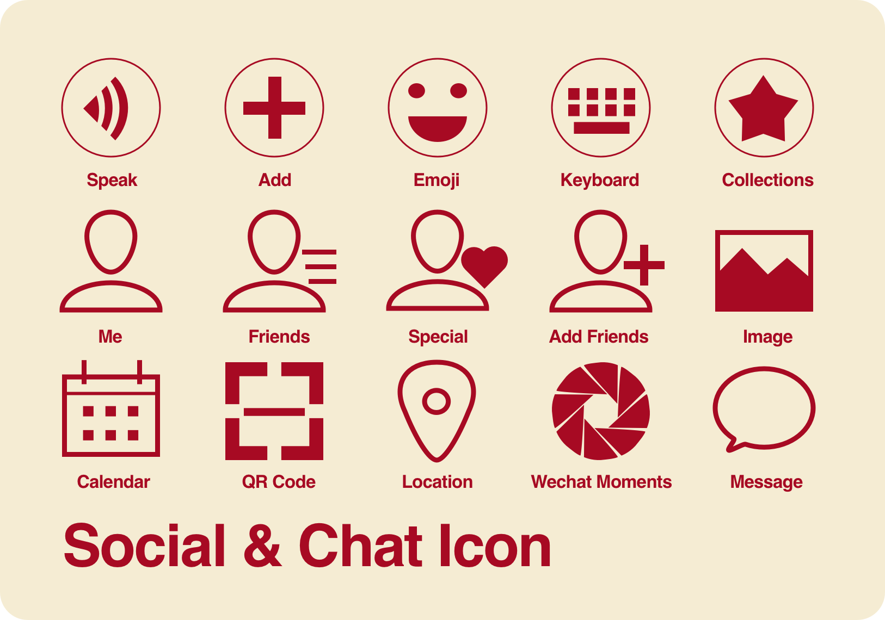

Icons
Icon Design
Oct 2016
I designed several groups of linear icons
for sketch practice and future app/website
designing use.
These icons are all free in sketch file so that anyone can use if likes.
Now there are two groups of icons available:
- Entertainment Icon
- Social & Chat Icon
I’m using them in my other works.
These icons are all free in sketch file so that anyone can use if likes.
Now there are two groups of icons available:
- Entertainment Icon
- Social & Chat Icon
I’m using them in my other works.
